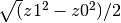
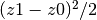

2.3.8.7. vacumm.misc.grid.kriging – Kriging¶
2.3.8.8. Overview¶
| Attributes: |
|
|||||||
|---|---|---|---|---|---|---|---|---|
| Functions: | ||||||||
| Classes: |
2.3.8.9. Content¶
Kriging utilities inspired from the AMBHAS library (http://www.ambhas.com/).
-
class
CloudKriger(x, y, z, krigtype, mtype=None, vgf=None, npmax=1000, nproc=None, exact=False, distfunc='simple', errfunc=None, mean=None, farvalue=None, **kwargs)[source]¶ Bases:
objectOrdinary kriger using mutliclouds of points
Big input cloud of points (size >
npmax) are split into smaller clouds using cluster analysis of distance with functioncloud_split().The problem is solved in this way:
- Input points are split in clouds if necessary.
- The input variogram matrix is inverted
for each cloud, possibly using
multiprocessingifnproc>1. - Value are computed at output positions using each the inverted matrix of cloud.
- Final value is a weighted average of the values estimated using each cloud. Weights are inversely proportional to the inverse of the squared error.
Params: - x/y/z: Input positions and data (masked array).
- mtype, optional: Variogram model type (defaults to ‘exp’).
See
variogram_model_type()andvariogram_model_type(). - vgf, optional: Variogram function. If not set,
it is estimated using
variogram_fit(). - npmax, optional: Maxima size of cloud.
- nproc, optional: Number of processes to use to invert matrices. Set it to a number <2 to switch off parallelisation.
- exact, optional: If True, variogram is exactly zero when distance is zero.
- distfunc: Function to compute distances, or a mode argument to
get_distances(). - errfunc, optional: Callable function to compute “errors” like square root difference between to z values. It take two arguments and defaults to .
- Extra keywords are parameters to the
variogram_model()that must not be optimized byvariogram_model(). For instancen=0fix the - Extra keywords are the parameters to the
variogram_model()that must not be optimized byvariogram_model(). For instancen=0fixes the nugget to zero. This is used only ifvfgis not passed as an argument.
Attributes: x,y,z,np,xc,yc,zc,npc,variogram_function,Ainv,npmax,nproc.-
x¶ List of all input x positions.
-
y¶ List of all input y positions.
-
z¶ List of all input data.
-
xc¶ List of input x positions of each cloud.
-
yc¶ List input of y positions of each cloud.
-
zc¶ List of input data of each cloud.
-
Ainv¶ Invert of A
-
interp(xo, yo, geterr=False, blockr=None)[source]¶ Interpolate to positions xo,yo
Params: - xo/yo: Output positions.
- geterr, optional: Also return errors.
Return: zoorzo,eo
-
sill¶ Sill
-
variogram_fit(x=None, y=None, z=None, **kwargs)[source]¶ Estimate the variogram function by using
variogram_fit()
-
variogram_func¶ Variogram function
-
DEFAULT_VARIOGRAM_MODEL_TYPE= 'exponential'¶ Default variogram model type
-
exception
KrigingError[source]¶ Bases:
exceptions.Exception
-
class
OrdinaryCloudKriger(x, y, z, mtype=None, vgf=None, npmax=1000, nproc=None, exact=False, distfunc='simple', errfunc=None, **kwargs)[source]¶ Bases:
vacumm.misc.grid.kriging.CloudKrigerOrdinary kriger using cloud splitting
-
OrdinaryKriger¶
-
class
SimpleCloudKriger(x, y, z, mtype=None, vgf=None, npmax=1000, nproc=None, exact=False, distfunc='simple', errfunc=None, mean=None, farvalue=None, **kwargs)[source]¶ Bases:
vacumm.misc.grid.kriging.CloudKrigerSimple kriger using cloud splitting
-
VARIOGRAM_MODEL_TYPES= ['linear', 'exponential', 'spherical', 'gaussian']¶ Variogram model types
-
class
VariogramModel(mtype, **kwargs)[source]¶ Bases:
objectClass used when fitting a variogram model to data to better control params
-
get_all_kwargs(pp)[source]¶ Get arguments list to
variogram_model()by merging variable params p andfixed_params
-
get_var_args(**kwargs)[source]¶ Get variable arguments list from specified params
Note
Result cannot contain
None
-
param_names= ['n', 's', 'r']¶
-
-
cloud_split(x, y, npmax=1000, getdist=True, getcent=True)[source]¶ Split data intot cloud of points of max size npmax:
Returns: Noneiflen(x)<=npmaxElse
indicesor(indices, global_distorsion, distortions).
-
gauss3(x, y, x0=-1, y0=0.5, dx0=1, dy0=1, f0=1.0, x1=1, y1=1, dx1=2, dy1=0.5, f1=-1, x2=0, y2=-1.5, dx2=0.5, dy2=0.5, f2=-0.3, **kwargs)[source]¶ Create data sample as function position and 3-gaussian function
-
gridded_gauss3(nx=100, ny=100, xmin=-3, xmax=3, ymin=-3, ymax=3, mesh=False, **kwargs)[source]¶ Create a data sample on a grid using
gauss3()
-
random_points(np=200, xmin=-3, xmax=3, ymin=-3, ymax=3, **kwargs)[source]¶ Generate random coordinates of points
-
syminv(A)[source]¶ Invert a symetric matrix
Params: - A: (np+1,np+1) for variogram matrix
Return: Ainv(np+1,np+1)Raise:
-
variogram(x, y, z, binned=None, nmax=1500, nbindef=30, nbin0=None, nbmin=10, distmax=None, distfunc='simple', errfunc=None)[source]¶ Estimate variogram from data
Params: - x/y/z: 1D arrays of positions and data.
- nmax, optional: Above this number, size of the sampe is reduced using undersampling.
- binned, optional: If set to a number,
data are arranged in bins to estimate
variogram. If set to
None, data are arranged in bins if the number of pairs of points is greater thannbindef*nbmin. - nbindef, optional: Default number
of bins (not used if
binnedis a number). - nbin0, optional: If set to a number > 1,
the first bin is split into nbin0 sub-bins.
If set to
None, it is evaluated withmin(bins[1]/nbmin, nbin). - nbmin, optional: Minimal number of points in a bin.
- distmax, optional: Max distance to consider.
- distfunc: Function to compute distances, or a mode argument to
get_distances(). - errfunc, optional: Callable function to compute “errors” like square root difference between to z values. It take two arguments and defaults to .
-
variogram_fit(x, y, z, mtype=None, getall=False, getp=False, geterr=False, distfunc='simple', errfunc=None, **kwargs)[source]¶ Fit a variogram model to data and return the function
Example: >>> vm, errs = variogram_fit(x, y, z, 'linear', n=0, distmax=30e3, geterr=True)
Params: x/y/z: Position and data.
mtype: Variogram model type (see ::variogram_model_type).
getall: Get verything in a dictionary whose keys are
"func": model function,"err": fitting error,"params": all parameters has a dictionary,"popt": parameters than where optimised,vm":VariogramModelinstance,"mtype": variogram model type.
getp, optional: Only return model parameters. Return them as a class:`dict if equal to
2.variogram_<param>, optional:
paramis passed tovariogram().distfunc: Function to compute distances, or a mode argument to
get_distances().errfunc, optional: Callable function to compute “errors” like square root difference between to z values. It take two arguments and defaults to .
Warning
use “haversine” if input coordinates are in degrees.
Extra keywords are those of
variogram_model(). They can be used to freeze some of the parameters.>>> variogram_fit(x, y, z, mtype, n=0) # fix the nugget
-
variogram_model(mtype, n, s, r, nrelmax=0.2)[source]¶ Get the variogram model function from its name
-
variogram_model_type(mtype=None)[source]¶ Check the the variogram model type
Params: - mtype, optional:
None, and index or a string matching an element ofVARIOGRAM_MODEL_TYPES. If set toNone, it defaults toDEFAULT_VARIOGRAM_MODEL_TYPE.
- mtype, optional:
-
variogram_multifit(xx, yy, zz, mtype=None, getall=False, getp=False, **kwargs)[source]¶ Same as
variogram_fit()but with several samples